# Erstelle ein Objekt "x"
x <- 10
# Rechne mit dem Objekt
x + 5[1] 15R ist eine kostenlose Open-Source-Programmiersprache, die für Datenanalyse, Statistik und Visualisierung entwickelt wurde.
RStudio ist eine integrierte Entwicklungsumgebung (IDE) für R, die eine benutzerfreundliche Oberfläche zum Schreiben von Code, Verwalten von Dateien, Visualisieren von Daten und effizienten Organisieren von Projekten bietet.
–> “4 Quadranten”

R ist eine objektorientierte Sprache. Alles ist ein Objekt. Eine Zahl, eine Tabelle, ein Diagramm – alles Objekte. Objekte werden mit dem Zuweisungsoperator <- erstellt.
Mit Strg + Enter können wir Code-Zeilen in der Console ausführen.
# Erstelle ein Objekt "x"
x <- 10
# Rechne mit dem Objekt
x + 5[1] 15Ein Vektor ist eine Liste von Dingen. Verwende c() (kombinieren), um eine Liste zu erstellen.
my_ages <- c(25,24,30,50)
my_names <- c("Sandra", "Paul", "Jonas")Bei der Berechnung eines Vektors wird dies für jedes Element gleichzeitig durchgeführt.
my_ages + 2[1] 27 26 32 52R muss wissen, um welche Art von Daten es sich handelt. Mathematische Berechnungen mit einem Wort führen zu einem Error.

class(my_ages) [1] "numeric"class(my_names) [1] "character"# my_names + 5Dies ist die” Excel-Tabelle” von R. Ein Datenrahmen ist zweidimensional: Zeilen (Beobachtungen) und Spalten (Variablen). Hier finden 99 % der Datenanalysen statt.

df <- data.frame(id = c(1,2,3,4,5),
name = c("A", "B", "C", "D", "E"),
score = c(90, 75, 80, 84, 95) )Der Dollarzeichen-Operator $ wird verwendet, um eine einzelne Spalte aus einem Datenrahmen auszuwählen. “df$score” bedeutet also: „Gehe zum Datenrahmen „df“ UND wähle die Spalte „score“ aus.
Mit der Funktion mean() können wir Mittelwerte von Vektoren berechnen.
df$score [1] 90 75 80 84 95mean(df$score)[1] 84.8Benutze str() um eine Zusammenfassung des dataframes auszugeben.
str(df)'data.frame': 5 obs. of 3 variables:
$ id : num 1 2 3 4 5
$ name : chr "A" "B" "C" "D" ...
$ score: num 90 75 80 84 95Packages sind Tools (oder kleine “Software”) die in R für bestimmte Anwendungen geschrieben worden sind. Zum Beispiel wird das Package “ggplot” häufig für Visualisierungen verwendet. Das wichtigste Package-Bundle ist “tidyverse”.
Generell können wir Pakete mit install.packages() installieren. Um ein bereits installiertes Paket zu laden und in unserem Skript verwenden zu können benutzen wir library().
#install.packages("tidyverse")
library(tidyverse)── Attaching core tidyverse packages ──────────────────────── tidyverse 2.0.0 ──
✔ dplyr 1.1.4 ✔ readr 2.1.4
✔ forcats 1.0.0 ✔ stringr 1.5.1
✔ ggplot2 4.0.0 ✔ tibble 3.2.1
✔ lubridate 1.9.3 ✔ tidyr 1.3.0
✔ purrr 1.0.2
── Conflicts ────────────────────────────────────────── tidyverse_conflicts() ──
✖ dplyr::filter() masks stats::filter()
✖ dplyr::lag() masks stats::lag()
ℹ Use the conflicted package (<http://conflicted.r-lib.org/>) to force all conflicts to become errorsDas Tidyverse ist eine Sammlung aufeinander abgestimmter R-Pakete, die eine einheitliche und leicht verständliche Grammatik zum Importieren, Aufräumen, Transformieren und Visualisieren von Daten bereitstellen (im Gegensatz zu base-R).
Bei Error “Kein package namens…” -> vergessen das Package mit library() zu laden.
Beispiele für wichtige und häufig verwendete Packages aus dem Tidyverse-Bundle sind ggplot (Visualisierung) dplyr (Data Manipulation, filter, select, summarize), tidyr (data reshaping) oder readr (schneller daten import)
Im Kurs “Quantitative Geographien” arbeiten wir mit .csv und .shp files.
Zuerst importieren wir einen Datensatz mit den jährlichen Bevölkerungszahlen im Jahresmittel von 2002-2023. (bereitgestellt auf Lernplattform)
# Import Bevölkerungsdaten
pop <- read.csv("data/Bevölkerungsdaten.csv")
# Import Wanderungsdaten
moves <- read.csv("data/Wanderungsdaten.csv")Um einen ersten Überblick über die Datensätze zu erhalten, können wir die Funktionen head() und str() verwenden.
head(pop) jahr gemnr pop
1 2002 10101 11644
2 2003 10101 11699
3 2004 10101 11799
4 2005 10101 12045
5 2006 10101 12171
6 2007 10101 12350str(pop) 'data.frame': 50736 obs. of 3 variables:
$ jahr : int 2002 2003 2004 2005 2006 2007 2008 2009 2010 2011 ...
$ gemnr: int 10101 10101 10101 10101 10101 10101 10101 10101 10101 10101 ...
$ pop : int 11644 11699 11799 12045 12171 12350 12549 12717 12816 12950 ...names(pop) [1] "jahr" "gemnr" "pop" head(moves) gemnr jahr bi_zu bi_weg au_zu au_weg
1 10101 2002 870 763 92 127
2 10101 2003 1192 1120 145 101
3 10101 2004 1294 1088 141 122
4 10101 2005 1121 1027 134 81
5 10101 2006 1304 1112 116 123
6 10101 2007 1363 1210 224 163str(moves) 'data.frame': 46497 obs. of 6 variables:
$ gemnr : int 10101 10101 10101 10101 10101 10101 10101 10101 10101 10101 ...
$ jahr : int 2002 2003 2004 2005 2006 2007 2008 2009 2010 2011 ...
$ bi_zu : int 870 1192 1294 1121 1304 1363 1354 1297 1235 1338 ...
$ bi_weg: int 763 1120 1088 1027 1112 1210 1173 1227 1160 1234 ...
$ au_zu : int 92 145 141 134 116 224 259 282 288 313 ...
$ au_weg: int 127 101 122 81 123 163 260 226 208 245 ...names(moves)[1] "gemnr" "jahr" "bi_zu" "bi_weg" "au_zu" "au_weg"Der Pipe-Operator %>% (Strg + Umschalt + M) übergibt das Ergebnis einer Funktion an die nächste.
pop %>%
filter(gemnr == 10101) %>%
pull(pop) %>%
mean()[1] 13619.38Die Pipe kann man lesen als „UND DANN“. Daten nehmen, UND DANN filtern, UND DANN Bevölkerungszahlen ziehen, UND DANN Mittelwert nehmen.
Die Datenbereinigung macht 80 % der Arbeit aus. dplyr bietet fünf wichtige Funktionen. Die ersten beiden reduzieren die Datengröße.
Mit filter() behält man nur Zeilen, die einer Bedingung entsprechen.
pop_2002 <- pop %>%
filter(jahr == 2002)
Mit select() behält man nur bestimmte Spalten bei. Nützlich, um Datensätze mit vielen Spalten zu bereinigen.
kennz <- pop_2002 %>%
select(gemnr)Oftmals müssen Sie aus alten Daten neue Daten erstellen. In unserem Fall möchten wir beispielsweise Migrationssalden berechnen. mutate() fügt dem Dataframe eine neue Spalte mit der gewünschten Berechnung hinzu.
Wir berechnen zuerst das Binnenmigrationssaldo (bi_saldo) und dann das Aussenwanderungssaldo (au_saldo) für alle Gemeinden in Österreich.
moves <- moves %>%
mutate(bi_saldo = bi_zu - bi_weg,
au_saldo = au_zu - au_weg)Da wir in sowohl in “moves” als auch in “pop” die gleichen Gemeindekennziffern haben, können wir die beiden dataframes vereinigen (oder “joinen”). Zuvor müssen wir allerdings die Jahre 2024 und 2025 aus dem “pop” datensatz entfernen.
pop <- pop %>%
filter(!jahr %in% c(2024, 2025))Wir joinen die beiden Datensätze anhand der Variablen gemnr und jahr.
Der Code verbindet die beiden Tabellen pop und moves anhand der Spalten (by) gemnr und jahr, sodass alle Daten aus pop beibehalten und die passenden Werte aus moves ergänzt werden.
dta <- left_join(pop, moves, by = c("gemnr", "jahr"))Die erste Zahl der Gemeindekennziffern (“gemnr”) gibt das betreffende Bundesland an. Alle Gemeindekennziffern die mit “7” beginnen, sind demnach Tiroler Gemeinden.
dta <- dta %>%
mutate(bld = str_sub(gemnr, 1, 1))
# Wir ersetzen NAs mit 0 (Manche Gemeinden erfahren keine Zu- oder Abwanderung in einzelnen Jahren)
dta[is.na(dta)] <- 0Nun haben wir einen Datensatz mit dem wir weitere Berechnungen anstellen können!
group_by() teilt die Daten in Gruppen nach einer oder mehreren Variablen, und summarize() berechnet dann zusammenfassende Kennzahlen (wie Summe oder Mittelwert) für jede Gruppe.
Hier berechnen wir Gesamtbevölkerungszahlen und Migrationssalden (Innen- und Aussenwanderungen) für jedes Bundesland, in dem wir die Gemeindezahlen zusammenfassen.
bld_dta <- dta %>%
group_by(bld, jahr) %>%
summarise(pop_tot = sum(pop),
bi_saldo_tot = sum(bi_saldo),
au_saldo_tot = sum(au_saldo)) %>%
ungroup() `summarise()` has grouped output by 'bld'. You can override using the `.groups`
argument.head(bld_dta)# A tibble: 6 × 5
bld jahr pop_tot bi_saldo_tot au_saldo_tot
<chr> <int> <int> <dbl> <dbl>
1 1 2002 276673 120 523
2 1 2003 276542 302 723
3 1 2004 276792 807 1096
4 1 2005 278032 931 886
5 1 2006 279127 1129 753
6 1 2007 280062 1138 625Wir berechnen je eine neue Spalte (mutate) mit den:
Bevölkerungsveränderungsrate
Die Bevölkerungsveränderungsrate ist definiert als \[\frac{Bevölkerungsstand_t - Bevölkerungsstand_{t-1}}{Bevölkerungsstand_{t-1}} \times 100\].
Absolute Veränderung = Differenz zwischen zwei Jahren (pop_diff) Rate = Differenz relativ zur Ausgangsbevölkerung (pop_rate)
Die Bevölkerungsveränderungsrate gibt an, um wie viel Prozent sich die Bevölkerung eines Gebietes innerhalb eines bestimmten Zeitraums verändert hat.
Binnenwanderungsrate
Die Binnenwanderungsrate berechnet sich als \[\frac{\text{Binnenwanderungssaldo}}{\text{Bevölkerungsstand}} \times 1000\].
Die Rate gibt an, wie viele Personen pro 1.000 Einwohner:innen durch Binnenmigration gewonnen oder verloren werden
Aussenwanderungsrate
Die Außenwanderungsrate berechnet sich als \[\frac{\text{Außenwanderungssaldo}}{\text{Bevölkerungsstand}} \times 1000\].
Die Außenwanderungsrate zeigt, wie viele Personen pro 1.000 Einwohner:innen durch Zu- und Wegzüge über die Staatsgrenze hinweg gewonnen oder verloren werden.
Gesamtmigrationsbilanz
Die Gesamtmigrationsbilanz berechnet sich als \[\text{Binnenwanderungssaldo} + \text{Außenwanderungssaldo}\].
Die Gesamtmigrationsbilanz zeigt den gesamten Bevölkerungsgewinn oder -verlust einer Region durch alle Wanderungsbewegungen.
Die Gesamtmigrationsrate berechnet sich analog zu den anderen Migrationsraten als \[\frac{\text{Gesamtmigrationssaldo}}{\text{Bevölkerungsstand}} \times 1000\].
Natürliche Bevölkerungsveränderung
Sieht man sich die demographische Gesamtrechnung an:
\[ \Delta \text{Bevölkerungsveränderung} = \underbrace{\text{natürliche Veränderung}}_{\text{Geburten - Sterbefälle}} + \underbrace{\text{Binnenwanderungssaldo}}_{\text{Zu- minus Fortzüge innerhalb des Landes}} + \underbrace{\text{Außenwanderungssaldo}}_{\text{Zu- minus Fortzüge über die Staatsgrenze}} \]
müssten wir theoretisch die natürliche Bevölkerungsveränderung mit \(\text{Bevölkerungsveränderung} - \text{Gesamtmigrationssaldo}\). berechnen können.
ABER ACHTUNG:
Die auf diese Art berechneten natürlichen Bevölkerungszahlen können von offiziellen Statistiken abweichen, weil unsere Bevölkerungsstände zum Stichtag 1.1. erfasst werden, während Migrationsdaten über das Jahr verteilt für den Referenzzeitraum erhoben werden!
Die Funktion lag() verschiebt die Werte einer Variable um eine Position nach unten, sodass man den vorherigen Wert einer Beobachtung mit dem aktuellen vergleichen kann (z. B. für Zeitreihen, Differenzen oder eben das Berechnen von relativen Veränderungen).
bld_dta <- bld_dta %>%
group_by(bld) %>%
mutate(pop_diff = pop_tot - lag(pop_tot),
pop_rate = (pop_diff / lag(pop_tot)) * 100,
bi_rate = (bi_saldo_tot / pop_tot) * 1000,
au_rate = (au_saldo_tot / pop_tot) * 1000,
mig_saldo = au_saldo_tot + bi_saldo_tot,
mig_rate = (mig_saldo / pop_tot) * 1000,
nat_change = (pop_tot - lag(pop_tot) - lag(mig_saldo))) %>%
ungroup()ggplot2 basiert auf Ebenen. Man erstellt nicht einfach „ein Diagramm“, sondern baut es Schicht für Schicht auf, wie einen Kuchen. Die wesentlichsten Funktionen von ggplot finden sich unter
Help->Cheat Sheets->Data Visualistion with ggplot
Die 3 wesentlichen Schichten:
Das Plus Zeichen+ : In ggplot verwenden wir + zum Hinzufügen von Ebenen, nicht die Pipe %>%. So können Sie ganz einfach Titel, Themen und Skalen hinzufügen.
Mit geom_line() erstellen wir einen Line-Chart.
pop_tirol <- bld_dta %>%
filter(bld == 7) %>%
drop_na()
ggplot(data = pop_tirol, aes(x = jahr, y = pop_rate))+
geom_col()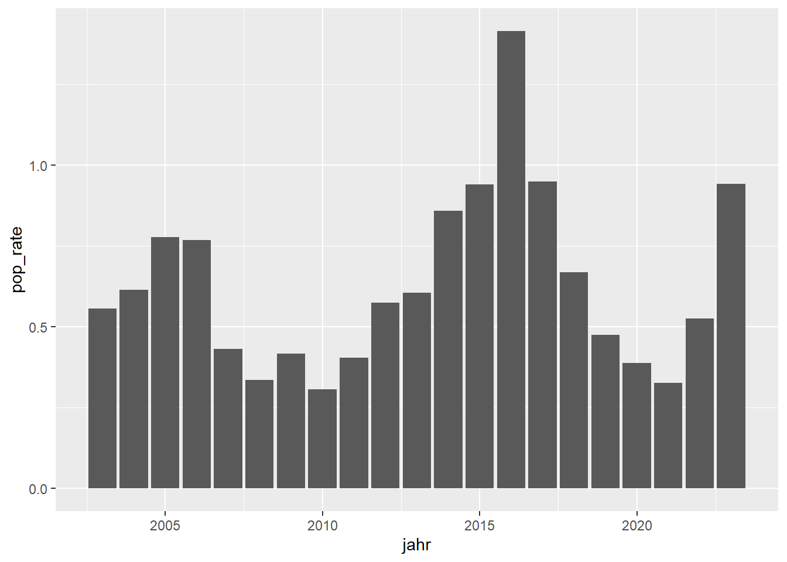
# Wir können mit labs() die Labels der x- und y- Axe anpassen
ggplot(data = pop_tirol, aes(x = jahr, y = pop_rate))+
geom_col()+
labs(x = " ", y = "Bevölkerungsveränderung in %")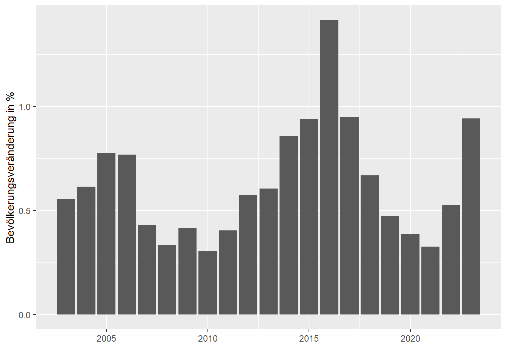
# Wir können ein vorgefertigtes Thema mit beispielsweise theme_classic() auswählen
ggplot(data = pop_tirol, aes(x = jahr, y = pop_rate))+
geom_col()+
theme_classic()+
labs(x = " ", y = "Bevölkerungsveränderung in %")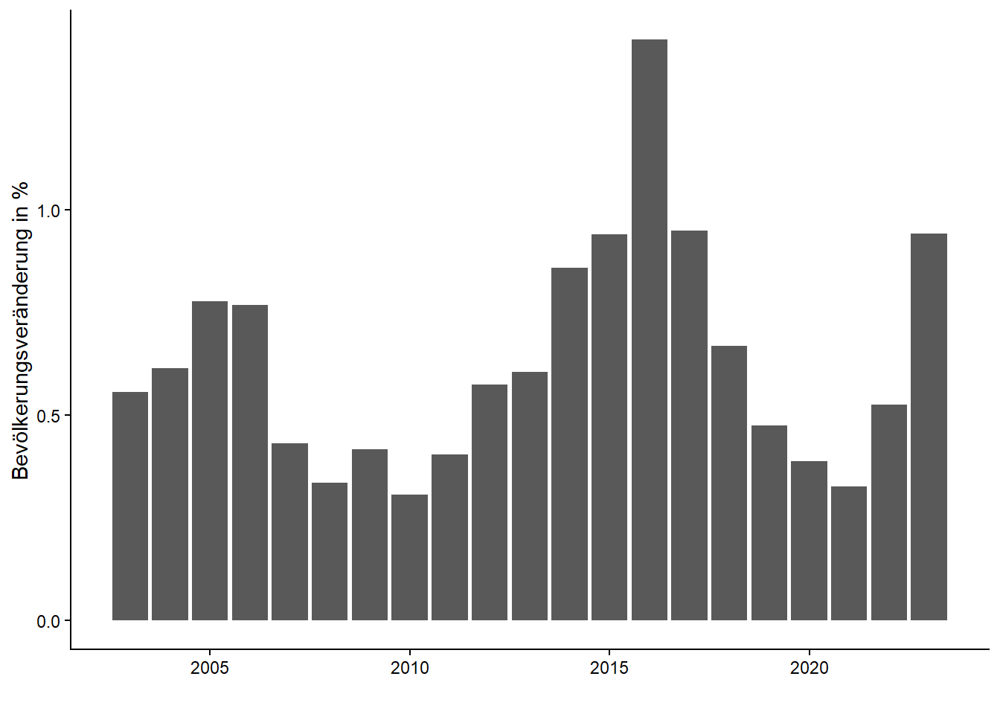
# mit "fill" können wir die Farbe der Balken ändern (auch mit Farbcodes möglich!)
ggplot(data = pop_tirol, aes(x = jahr, y = pop_rate))+
geom_col(fill = "dodgerblue")+
theme_classic()+
labs(x = " ", y = "Bevölkerungsveränderung in %")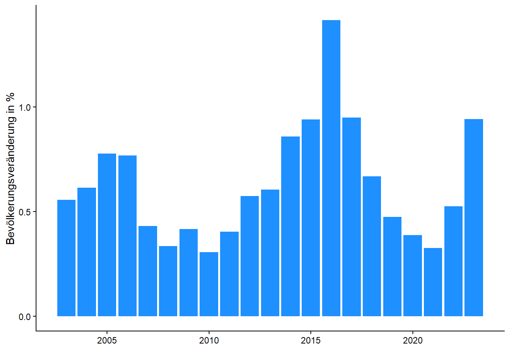
# Mittels zb. as.factor() können wir in ggplot den Datentyp angeben, ohne den ursprünglichen Dataframe zu ändern.
# Mit theme() können wir jedes Element des Diagramms ansteuern und verändern
ggplot(data = pop_tirol, aes(x = as.factor(jahr), y = pop_rate))+
geom_col(fill = "firebrick")+
theme_classic()+
theme(axis.text.x = element_text(angle = 45, hjust = 1))+
labs(x = " ", y = "Bevölkerungsveränderung in %", title = "Bevölkerungsveränderungrate in %; Tirol 2003-2023")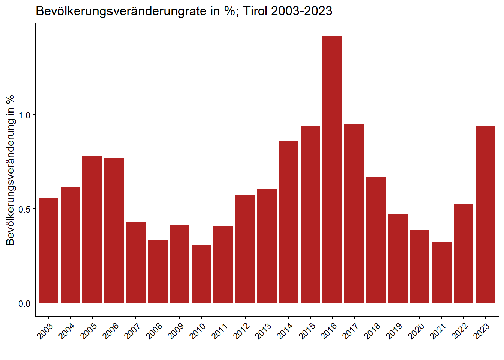
Mit geom_col() erstellen wir einen Bar-Chart. Mit theme_classic() können wir das Thema des Plots ändern.
ggplot(data = pop_tirol, aes(x = jahr, y = au_saldo_tot))+
geom_col()+
theme_classic()+
labs(x = " ", y = "Bevölkerungsveränderung absolut", title = "Bevölkerungsveränderung Tirol, 2002-2023")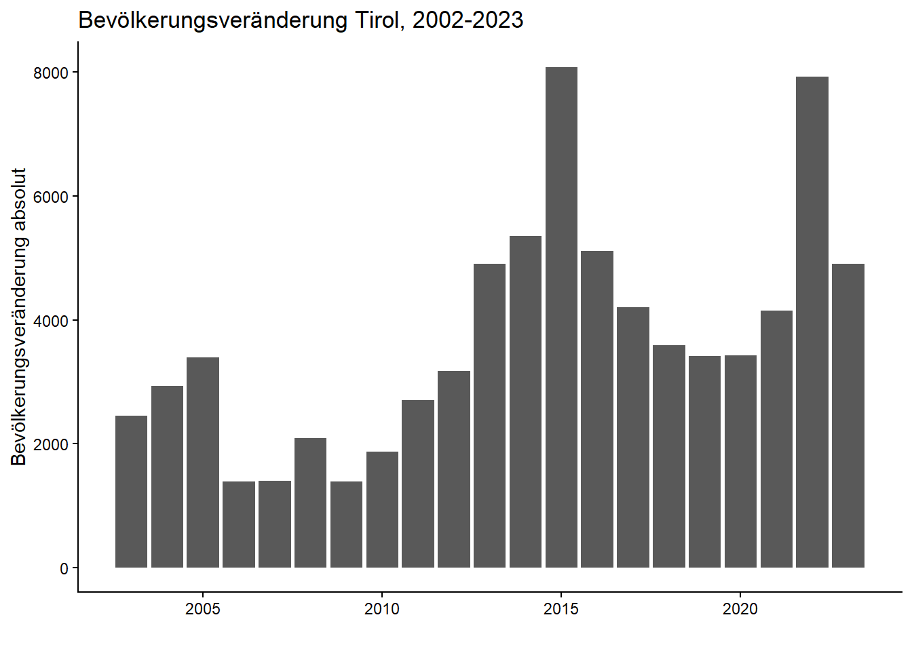
ggplot(data = pop_tirol, aes(x = jahr, y = bi_saldo_tot))+
geom_col()+
theme_classic()+
labs(x = " ", y = "Binnenwanderungssaldo", title = "Binnenwanderungssaldo Tirol, 2002-2023")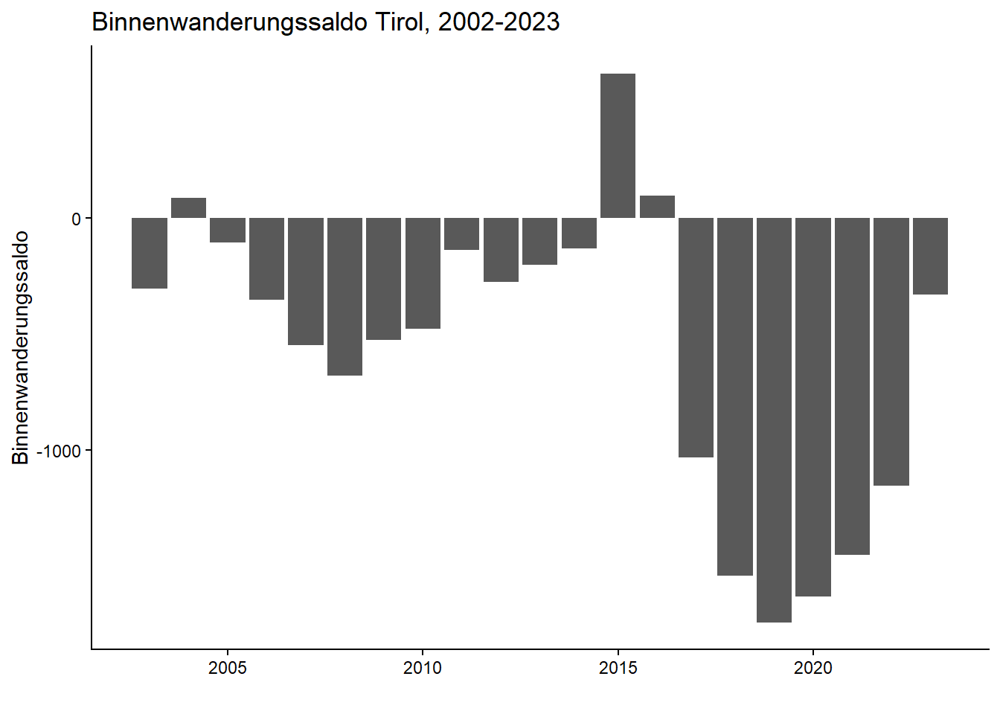
ggplot(data = pop_tirol, aes(x = jahr, y = au_saldo_tot))+
geom_col()+
theme_classic()+
labs(x = " ", y = "Aussenwanderungssaldo", title = "Aussenwanderungssaldo Tirol, 2002-2023")ggplot(data = pop_tirol, aes(x = jahr, y = mig_saldo))+
geom_col()+
theme_classic()+
labs(x = " ", y = "Gesamtmigrationssaldo", title = "Gesamtmigrationssaldo Tirol, 2002-2023")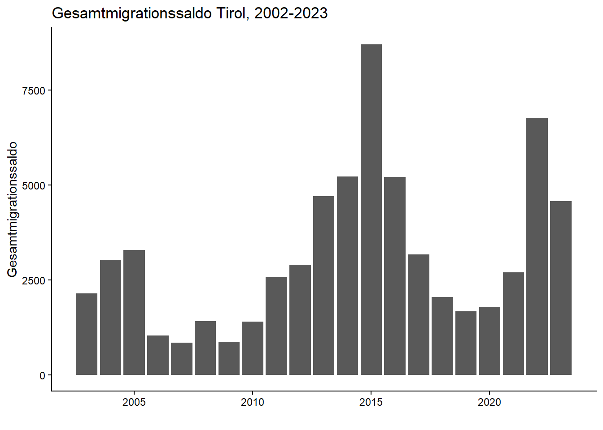
Das Long-Format (oder “Tidy Data”) ist ein Datenformat, bei dem jede Variable eine Spalte, jede Beobachtung eine Zeile und jede Einheit eine Tabelle bildet, sodass Daten klar strukturiert und einfach analysierbar sind.
Im Wide-Format hat jede Variable eigene Spalten, oft mit mehreren Messzeitpunkten pro Spalte, während im Long-Format jede Zeile eine einzelne Beobachtung enthält und Messzeitpunkte oder Kategorien in einer eigenen Spalte stehen.
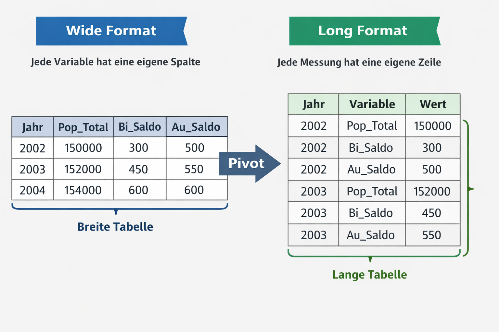
bld_dta_long <- bld_dta %>%
drop_na()
## Recoding bld_dta$bld into bld_dta$bld_rec
bld_dta$bld <- bld_dta$bld %>%
fct_recode(
"Burgenland" = "1",
"Kärnten" = "2",
"Niederösterreich" = "3",
"Oberösterreich" = "4",
"Salzburg" = "5",
"Steiermark" = "6",
"Tirol" = "7",
"Vorarlberg" = "8",
"Wien" = "9"
)
rates_all <- bld_dta %>%
select(jahr, bld, bi_rate, au_rate, mig_rate)rates_all <- rates_all %>%
pivot_longer(cols = c(bi_rate, au_rate, mig_rate),
names_to = "variable",
values_to = "value") ggplot(data = rates_all %>% filter(bld == "Tirol"), aes(x = as.factor(jahr), y = value, col = variable, group = variable))+
geom_line(linewidth = 1)+
theme_classic()+
scale_color_manual(
values = c("au_rate" = "dodgerblue",
"bi_rate" = "firebrick",
"mig_rate" = "forestgreen"),
labels = c("Aussenwanderungsrate", "Binnenwanderungsrate", "Gesamtwanderungsrate")
)+
geom_hline(yintercept = 0, col = "black", linetype = "dashed")+
labs(y = "Rate pro 1000 EW", x = " ", col = " ", title = "Migrationsstatistik Tirol, 2003-2023", caption = "Quelle: Statistik Austria")+
theme(axis.text.x = element_text(angle = 45, hjust = 1)) 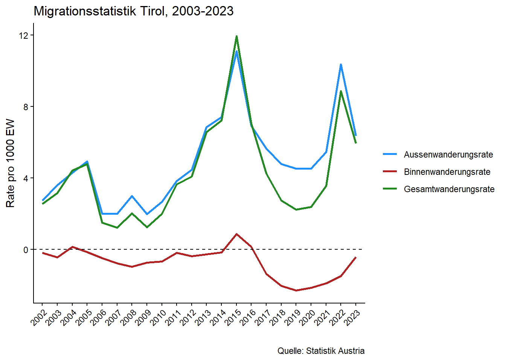
ggplot(data = rates_all %>% filter(bld == "Tirol"), aes(x = as.factor(jahr), y = value, col = variable, group = variable))+
geom_smooth(linewidth = 1, se= F, span = 0.3)+
theme_classic()+
scale_color_manual(
values = c("au_rate" = "dodgerblue",
"bi_rate" = "firebrick",
"mig_rate" = "forestgreen"),
labels = c("Aussenwanderungsrate", "Binnenwanderungsrate", "Gesamtwanderungsrate")
)+
geom_hline(yintercept = 0, col = "black", linetype = "dashed")+
labs(y = "Rate pro 1000 EW", x = " ", col = " ", title = "Migrationsstatistik Tirol, 2003-2023", caption = "Quelle: Statistik Austria")+
theme(axis.text.x = element_text(angle = 45, hjust = 1))`geom_smooth()` using method = 'loess' and formula = 'y ~ x'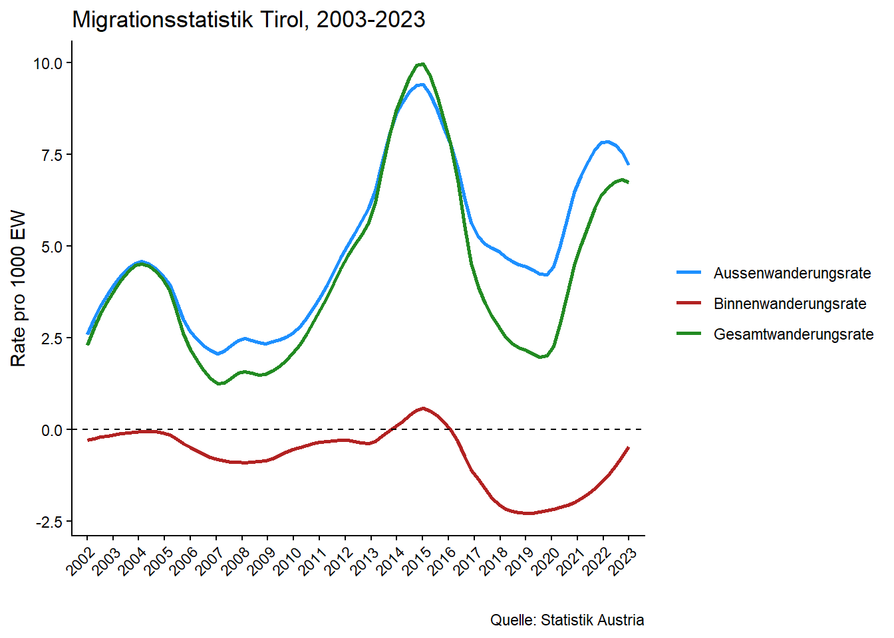
ggplot(data = rates_all %>% filter(bld == "Tirol"), aes(x = as.factor(jahr), y = value, fill = variable, group = variable))+
geom_col()+
theme_classic()+
scale_fill_manual(
values = c("au_rate" = "dodgerblue",
"bi_rate" = "firebrick",
"mig_rate" = "forestgreen"),
labels = c("Aussenwanderungsrate", "Binnenwanderungsrate", "Gesamtwanderungsrate")
)+
geom_hline(yintercept = 0, col = "black", linetype = "dashed")+
labs(y = "Rate pro 1000 EW", x = " ", fill = " ", title = "Migrationsstatistik Tirol, 2003-2023", caption = "Quelle: Statistik Austria")+
theme(axis.text.x = element_text(angle = 45, hjust = 1)) # Diese Darstellung ist fehlerhaft, warum?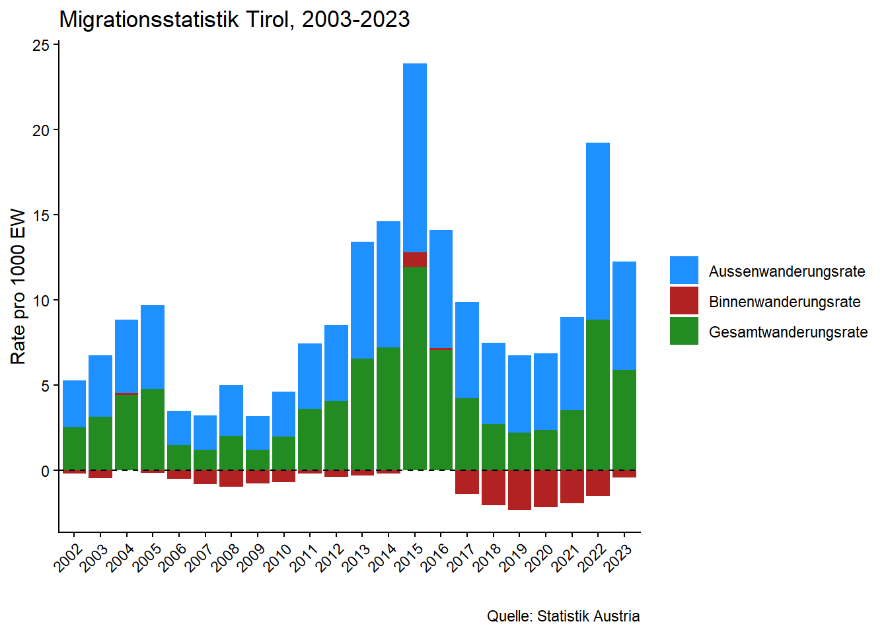
ggplot(data = rates_all %>% filter(bld == "Tirol"), aes(x = as.factor(jahr), y = value, fill = variable, group = variable))+
geom_col(position = "dodge")+
theme_classic()+
scale_fill_manual(
values = c("au_rate" = "dodgerblue",
"bi_rate" = "firebrick",
"mig_rate" = "forestgreen"),
labels = c("Aussenwanderungsrate", "Binnenwanderungsrate", "Gesamtwanderungsrate")
)+
geom_hline(yintercept = 0, col = "black", linetype = "dashed")+
labs(y = "Rate pro 1000 EW", x = " ", fill = " ", title = "Migrationsstatistik Tirol, 2003-2023", caption = "Quelle: Statistik Austria")+
theme(axis.text.x = element_text(angle = 45, hjust = 1))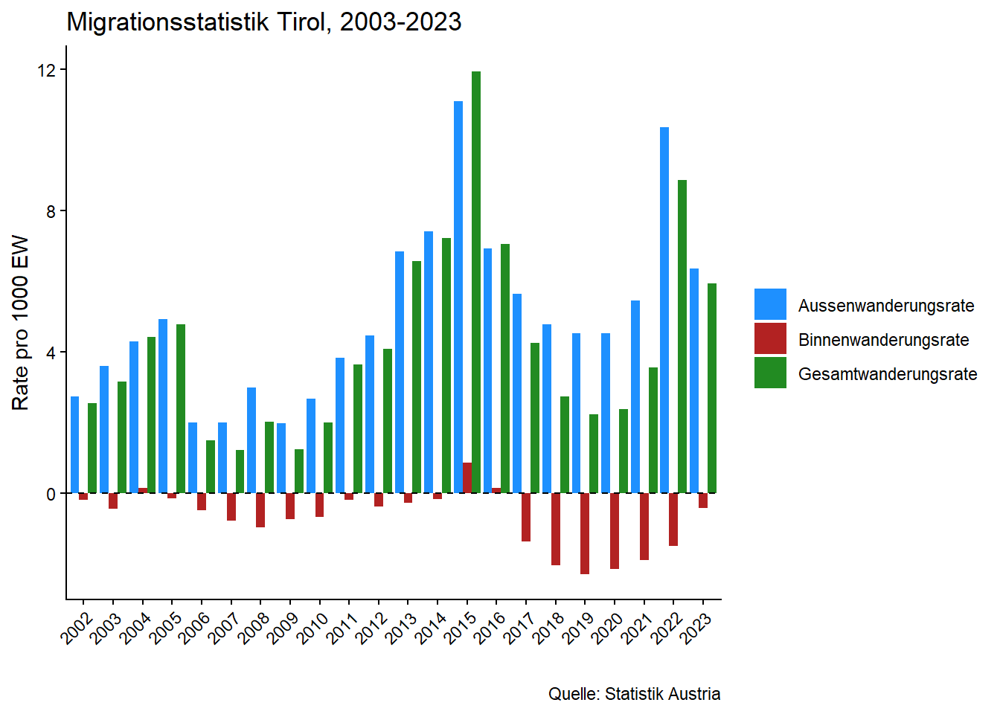
Mit facet_wrap() oder facet_grid() können wir diese Darstellung auch für alle Bundesländer in einem Plot vergleichend darstellen.
ggplot(data = rates_all %>% filter(variable != "mig_rate"),
aes(x = as.factor(jahr), y = value, fill = variable, group = variable))+
geom_col()+
#theme_classic()+
scale_fill_manual(
values = c("au_rate" = "dodgerblue",
"bi_rate" = "firebrick"),
labels = c("Aussenwanderungsrate", "Binnenwanderungsrate")
)+
facet_wrap(bld~.)+
geom_hline(yintercept = 0, col = "black", linetype = "dashed")+
labs(y = "Rate pro 1000 EW", x = " ", fill = " ",
title = "Migrationsstatistik Österreichischer Bundesländer, 2003-2023",
caption = "Quelle: Statistik Austria")+
theme(axis.text.x = element_text(angle = 45, hjust = 1))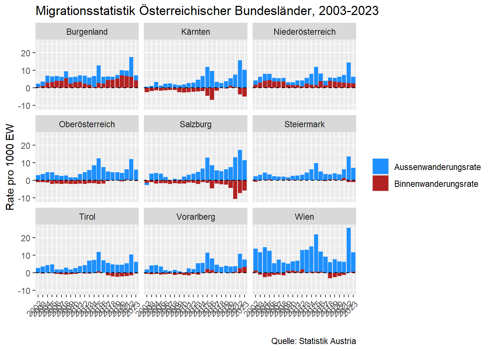
Die Urban-Rural-Typologie der Statistik Austria ist eine räumliche Klassifikation, die Gemeinden bzw. Regionen anhand von Kriterien wie Bevölkerungsdichte, strukturellen Merkmalen und Erreichbarkeit in städtische, intermediäre und ländliche Raumtypen einteilt, um statistische Analysen zu ermöglichen.
Die Urban-Rural Typologie der Statistik Austria kann im STATAtlas heruntergeladen werden: https://www.statistik.at/atlas/?mapid=topo_regionale_gliederung_oesterreich
typ <- read.csv2("data/003_gliederungen_nach_städtischen_und_ländlichen_gebieten(1).csv")
head(typ) gemnr Name Wert
1 10101 Eisenstadt 103
2 10201 Rust 410
3 10301 Breitenbrunn am Neusiedler See 310
4 10302 Donnerskirchen 310
5 10303 Großhöflein 103
6 10304 Hornstein 310Die Sequenzanalyse ist eine Methode zur Untersuchung von Abfolgen kategorialer Zustände über die Zeit. Im Unterschied zu klassischen statistischen Ansätzen betrachtet sie nicht nur, welche Ereignisse auftreten, sondern auch in welcher Reihenfolge und Dauer sie stattfinden. Dadurch lassen sich typische Verlaufsformen – etwa von Bildungs-, Erwerbs- oder Mobilitätsbiographien – sichtbar machen und miteinander vergleichen. Ebenfalls können kategorisierte Bevölkerungsveränderungen zwischen statistischen Einheiten verglichen werden.
Typische Fragestellungen, bei denen eine Sequenzanalyse sinnvoll sein kann:
Welche typischen Verlaufsformen lassen sich in den Daten erkennen, und wie unterscheiden sich diese zwischen statistischen Einheiten? Können darin typische Verlaufsmuster erkannt werden?
Eine Sequenz ist eine geordnete Folge von Zuständen oder Ereignissen, die eine Einheit (z. B. eine Person oder Gemeinde) über mehrere Zeitpunkte hinweg durchläuft.

In diesem Beispiel wären x1, x3, x4 Zustände. Die statistische Einheit (observation) durchläuft diese Zustände im Zeitverlauf.
Ziel in diesem Skript-Abschnitt ist es, die Bevölkerungsveränderungsraten auf Gemeindeebene zu kategorisieren und deren Ablauf mittels einer Sequenzanalyse zu vergleichen.
Wir berechnen zunächst erneut die jährliche Bevölkerungsveränderungsrate, diesmal für jede Gemeinde. Da die Raten auf Gemeindebene sehr stark fluktuieren können (zB. Eröffnung eines Pflegeheimes) verwenden wir einen rollenden Mittelwert als “smoothing” Technik.
Die Tabelle wird nach Gemeinde und Jahr sortiert, und mit rollapply() wird für jede Gemeinde ein 3-Jahres-Rolling Mean der Bevölkerungsraten berechnet (rate_roll3), wobei die Mittelwerte jeweils die aktuellen und zwei vorhergehenden Jahre umfassen (align = "right"). Am Ende werden noch fehlende Werte entfernt und die Daten wieder entgruppiert, sodass die rollenden Mittelwerte bereit für die Kategorisierung sind.
seq_dta <- dta %>%
group_by(gemnr) %>%
mutate(pop_diff = pop - lag(pop),
pop_rate = (pop_diff / lag(pop)) * 100) %>%
ungroup() %>%
select(jahr, gemnr, pop_rate, bld) %>%
drop_na()
library(zoo)
Attache Paket: 'zoo'Die folgenden Objekte sind maskiert von 'package:base':
as.Date, as.Date.numericseq_dta <- seq_dta %>%
arrange(gemnr, jahr) %>%
group_by(gemnr) %>%
mutate(rate_roll3 = rollapply(pop_rate,
width = 3,
FUN = mean,
fill = NA,
align = "right")) %>%
drop_na() %>%
ungroup()Der Code teilt die zuvor berechneten 3-Jahres-Rolling Means der Bevölkerungsraten (rate_roll3) in vier Kategorien ein. Mit ntile(..., 4) werden die Werte in Quartile unterteilt, sodass jede Kategorie etwa ein Viertel der Daten enthält. Anschließend werden die numerischen Quartile in lesbare Labels umgewandelt (stark negativ bis stark positiv), sodass die Ergebnisse leichter interpretierbar und für Visualisierungen nutzbar sind.
Mit table(seq_dta$rate_quartile) wird schließlich die Häufigkeitsverteilung der Kategorien angezeigt, sodass man schnell sehen kann, wie viele Beobachtungen in jede Gruppe fallen.
summary(seq_dta$rate_roll3) Min. 1st Qu. Median Mean 3rd Qu. Max.
-16.1922 -0.3777 0.2104 0.2639 0.8357 14.0328 seq_dta <- seq_dta %>%
mutate(rate_quartile = ntile(rate_roll3, 4),
rate_quartile = factor(rate_quartile,
levels = 1:4,
labels = c("stark negativ", "negativ", "positiv", "stark positiv")
))
table(seq_dta$rate_quartile)
stark negativ negativ positiv stark positiv
10042 10042 10041 10041 seq <- seq_dta %>%
pivot_wider(id_cols = c(gemnr, bld),
names_from = jahr,
values_from = rate_quartile)
seq <- left_join(seq, typ, by = "gemnr")
seq$Wert[is.na(seq$Wert)] <- "101"Der folgende Code erstellt eine Sequenzanalyse für die Spalten 3 bis 21 im Datensatz seq, die beispielsweise jährliche Veränderungen oder Ratings abbilden. Zunächst werden die Zustände der Sequenzen definiert: seq.scode kodiert sie intern als "HG", "G", "D" und "HD", während seq.alphabet und seq.labels für die lesbaren Bezeichnungen sorgen („stark positiv“ bis „stark negativ“). Mit seqdef() werden die Daten als Sequenzen vorbereitet, inklusive Farben für die Visualisierung (seq.cpal1), sodass jeder Zustand konsistent dargestellt wird.
Anschließend erlaubt der Code eine erste Exploration der Sequenzen: seqstatl() zeigt die Häufigkeit der Zustände über die Zeit, print() und summary() geben Übersicht über die Sequenzen einzelner Gemeinden und deren statistische Zusammenfassung, und seqlegend() erzeugt eine Legende, die die Farben den Zuständen zuordnet. So können Studierende schnell sehen, wie sich Zustände über die Zeit verteilen und Muster in den Sequenzen erkennen.
#install.packages("TraMineR")
library(TraMineR)
TraMineR stable version 2.2-8 (Built: 2023-11-21)Website: http://traminer.unige.chPlease type 'citation("TraMineR")' for citation information.seqstatl(seq[, 3:21])[1] "negativ" "positiv" "stark negativ" "stark positiv"seq.alphabet <- c("stark positiv", "positiv", "negativ", "stark negativ")
seq.labels <- seq.alphabet
seq.scode <- c("HG", "G", "D", "HD")
seq.cpal1= c("#d7191c","#fec980", "#c7e6db", "#2c7bb6")
seq.df <- seqdef (seq, var= 3:21,
states=seq.scode,
labels=seq.labels,
alphabet=seq.alphabet,
cpal = seq.cpal1) [>] state coding: [alphabet] [label] [long label] 1 stark positiv HG stark positiv 2 positiv G positiv 3 negativ D negativ 4 stark negativ HD stark negativ [>] 2114 sequences in the data set [>] min/max sequence length: 19/19print(seq.df[1:5, ], format="SPS") Sequence
1 (HG,19)
2 (HG,3)-(G,1)-(HG,3)-(G,2)-(HG,1)-(G,1)-(D,1)-(HD,1)-(D,1)-(G,1)-(HG,2)-(G,1)-(D,1)
3 (G,3)-(HG,5)-(G,2)-(D,2)-(G,2)-(D,1)-(HD,2)-(D,1)-(HG,1)
4 (HG,3)-(G,2)-(D,2)-(G,3)-(D,1)-(G,1)-(HG,3)-(G,3)-(D,1)
5 (D,1)-(G,3)-(D,1)-(HG,7)-(G,1)-(D,1)-(G,2)-(HG,1)-(G,1)-(D,1) summary(seq.df) [>] sequence object created with TraMineR version 2.2-8
[>] 2114 sequences in the data set, 2072 unique
[>] min/max sequence length: 19/19
[>] alphabet (state labels):
1=HG (stark positiv)
2=G (positiv)
3=D (negativ)
4=HD (stark negativ)
[>] dimensionality of the sequence space: 57
[>] colors: 1=#d7191c 2=#fec980 3=#c7e6db 4=#2c7bb6 seqlegend(seq.df)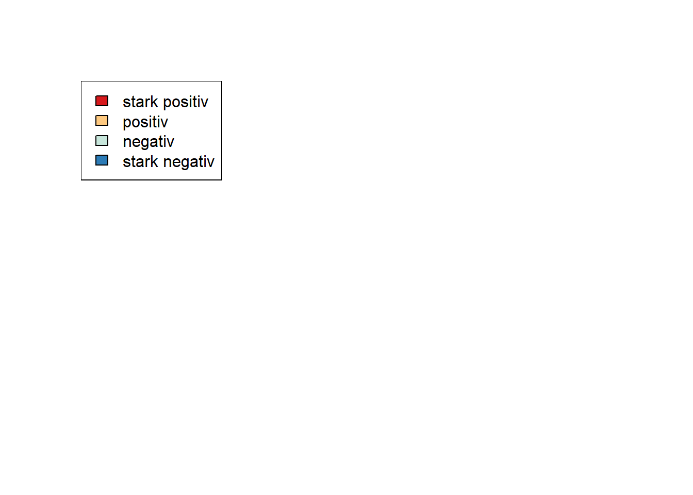
seqiplot(seq.df, border=NA, idxs= 1:2114)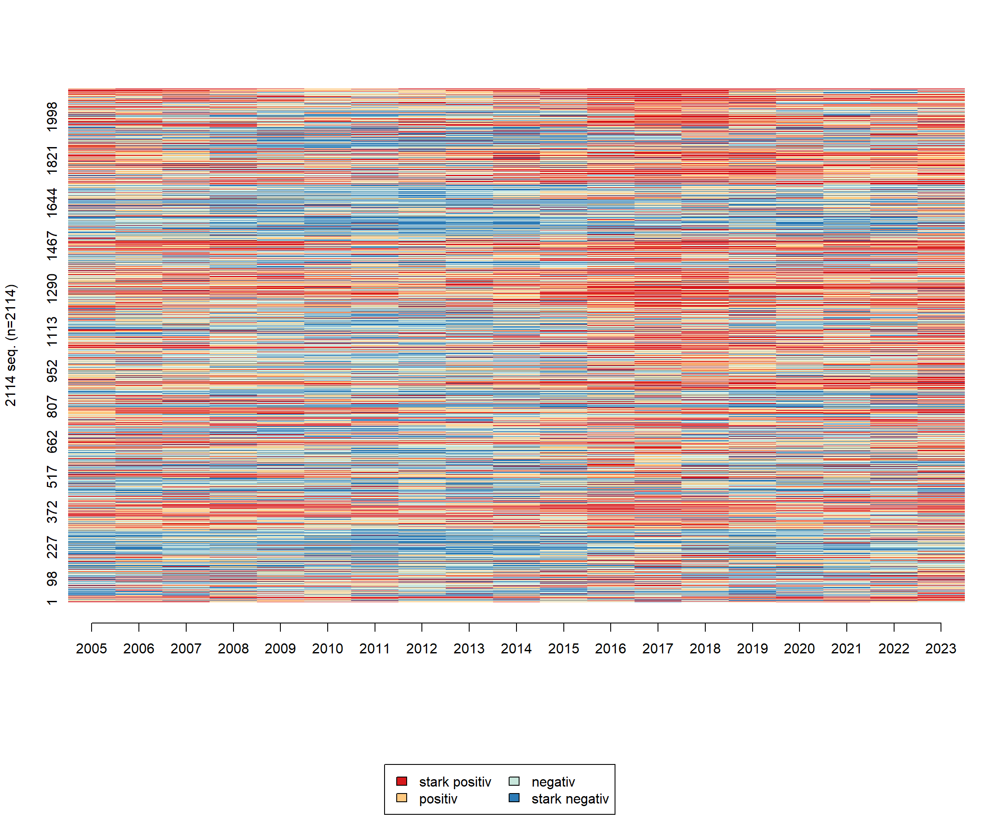
seqdplot(seq.df, main = "Sequence distribution plot", border=T) 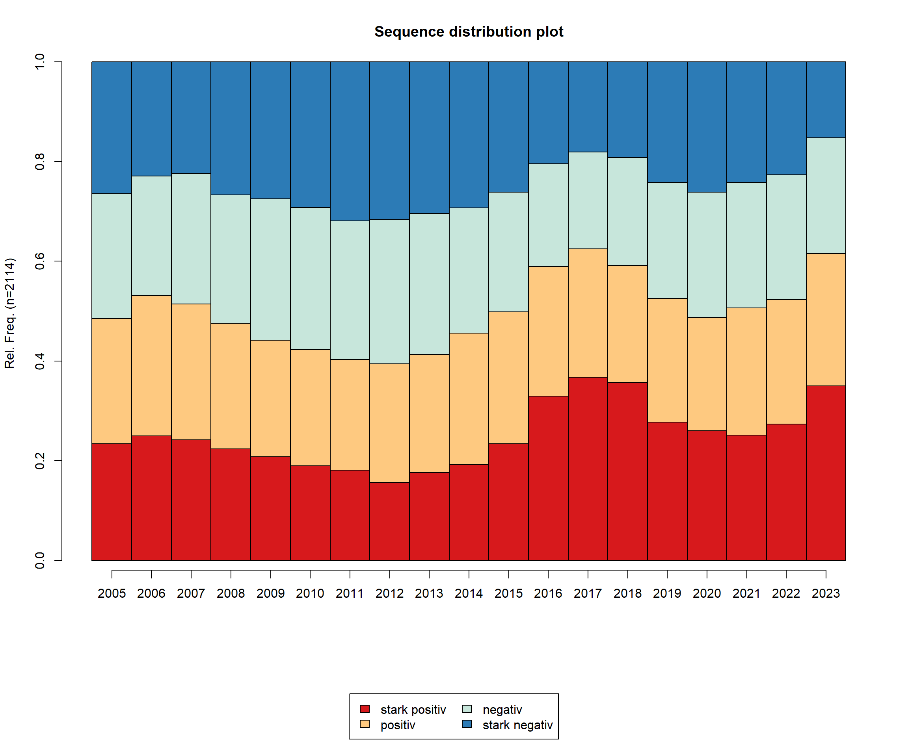
seqiplot(seq.df, border=NA, group = seq$Wert, idxs= 1:2114)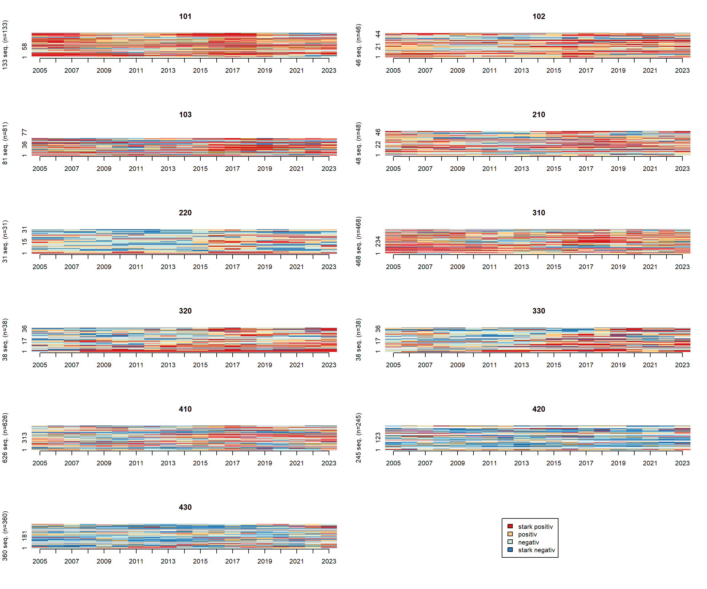
seqdplot(seq.df, main = "Sequence distribution plot", group = seq$Wert, border=T) 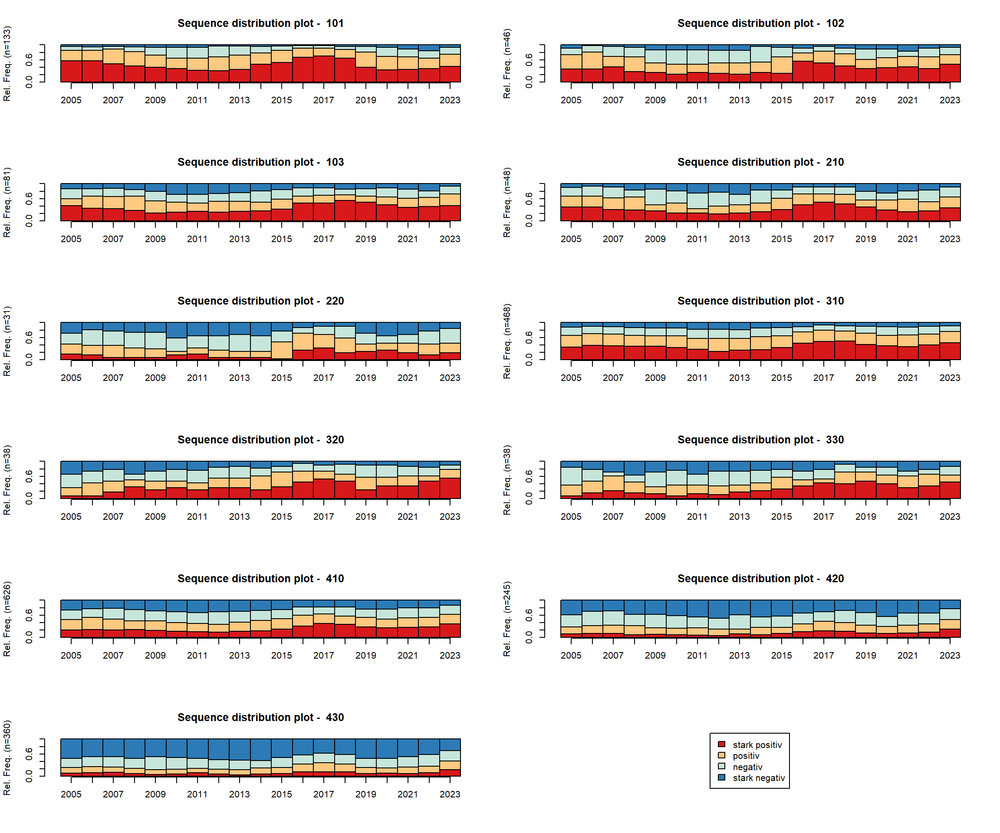
seqfplot(seq.df, main = "Sequence frequency plot", group = seq$Wert, border=T) 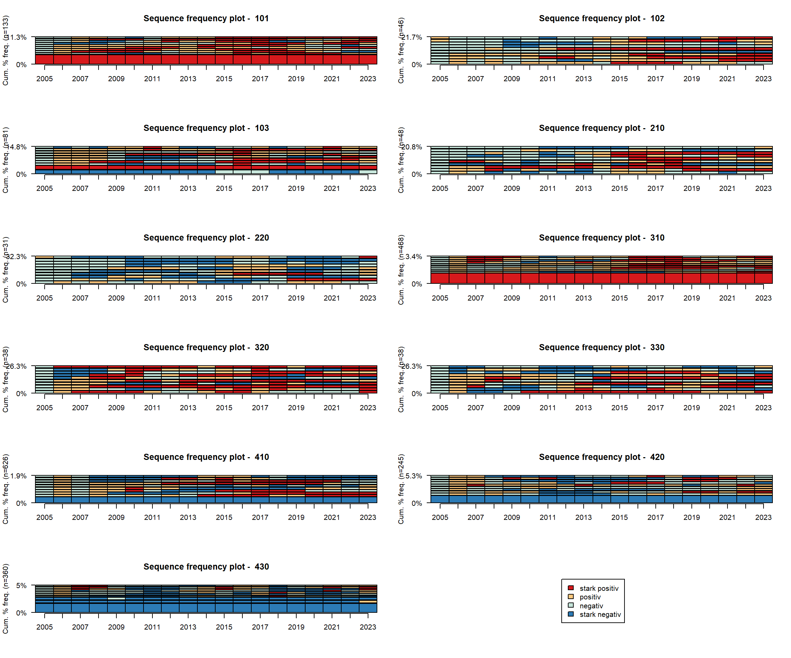
Optimal Matching (OM) ist eine Methode der Sequenzanalyse, die die Ähnlichkeit zwischen zeitlich geordneten Ereignisfolgen misst.
Konkret vergleicht OM zwei Sequenzen, indem es die minimale „Bearbeitungskosten“-Summe berechnet, die nötig ist, um die eine Sequenz in die andere zu überführen. Dabei werden drei Arten von Operationen erlaubt:
Insertion – Einfügen eines Zustands
Deletion – Löschen eines Zustans
Substitution – Ersetzen eines Zustands durch einen anderen
Jede Operation wird mit einer Kostenfunktion versehen, sodass Sequenzen, die ähnlich verlaufen, geringere Gesamtkosten haben. Die resultierende Distanzmatrix kann anschließend für Clusteranalysen, Multidimensionale Skalierung (MDS) oder Visualisierung von Sequenzmustern verwendet werden.
OM quantifiziert, wie „nah“ zwei zeitliche Abläufe beieinanderliegen, und erlaubt so die Analyse von typischen Mustern und Abweichungen in Sequenzdaten.
costs <- seqcost(seq.df, method = "INDELSLOG")
dist.om <- seqdist(seq.df, method = "OM", indel = costs$indel, sm = costs$sm) [>] 2114 sequences with 4 distinct states [>] checking 'sm' (size and triangle inequality) [>] 2072 distinct sequences [>] min/max sequence lengths: 19/19 [>] computing distances using the OM metric [>] elapsed time: 3.69 secsClustering ist ein Verfahren, bei dem Beobachtungen in Gruppen (Cluster) eingeteilt werden, sodass die Objekte innerhalb eines Clusters möglichst ähnlich und zwischen Clustern möglichst unterschiedlich sind.
Ward’s Methode ist eine spezielle Form des hierarchischen Clustering. Sie arbeitet nach dem Prinzip, dass in jedem Schritt die beiden Cluster zusammengeführt werden, deren Zusammenfassung die geringste Zunahme der Gesamtsumme der quadrierten Abweichungen (Within-Cluster-Variance) verursacht. Anders gesagt: Ward sucht immer die Kombination, die die homogensten Gruppen erzeugt.
Tendenziell erzeugt dieser Clustering-Algorithmus ähnlich große und kompakte Cluster, was die Interpretation von Gruppenmustern erleichtert.
wardcluster_OM <- hclust(as.dist(dist.om), method = "ward.D")
k <- 6
groups.om <- cutree(wardcluster_OM, k = k)
seqiplot(seq.df, border=NA, group = groups.om, idxs= 1:2114)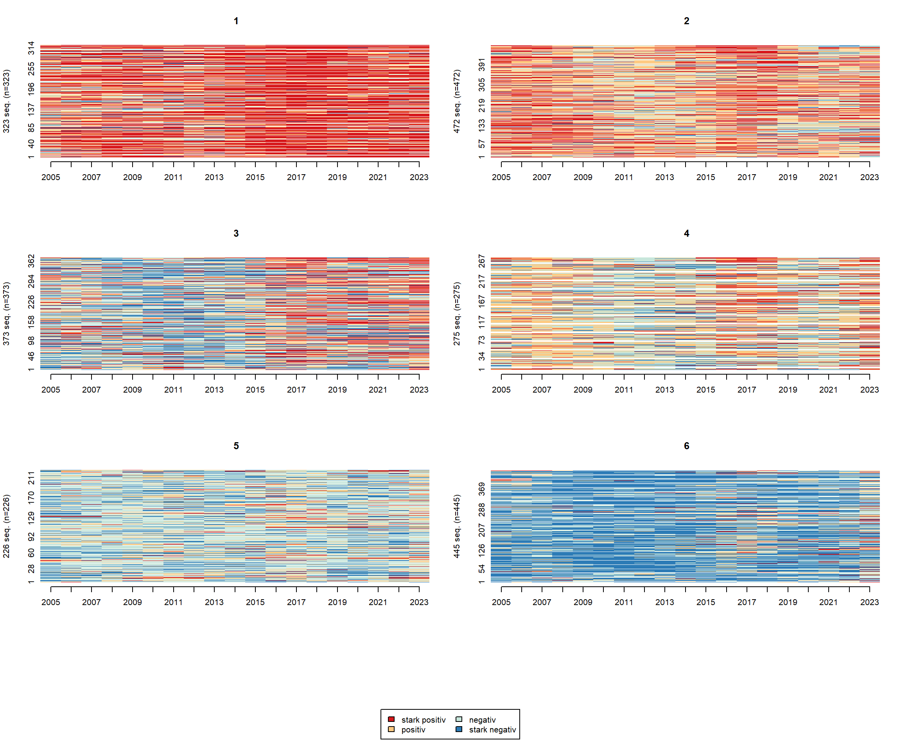
seqdplot(seq.df, main = "Sequence distribution plot", group = groups.om, border=T) 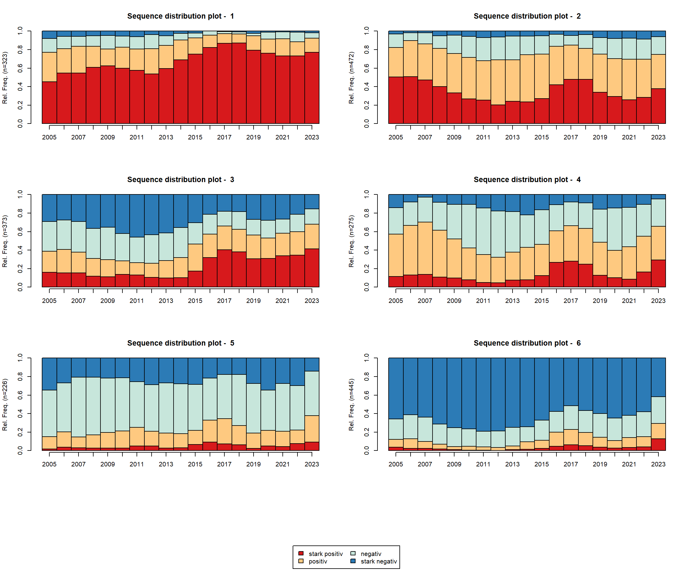
seqfplot(seq.df, main = "Sequence frequency plot", group = groups.om, border=T) 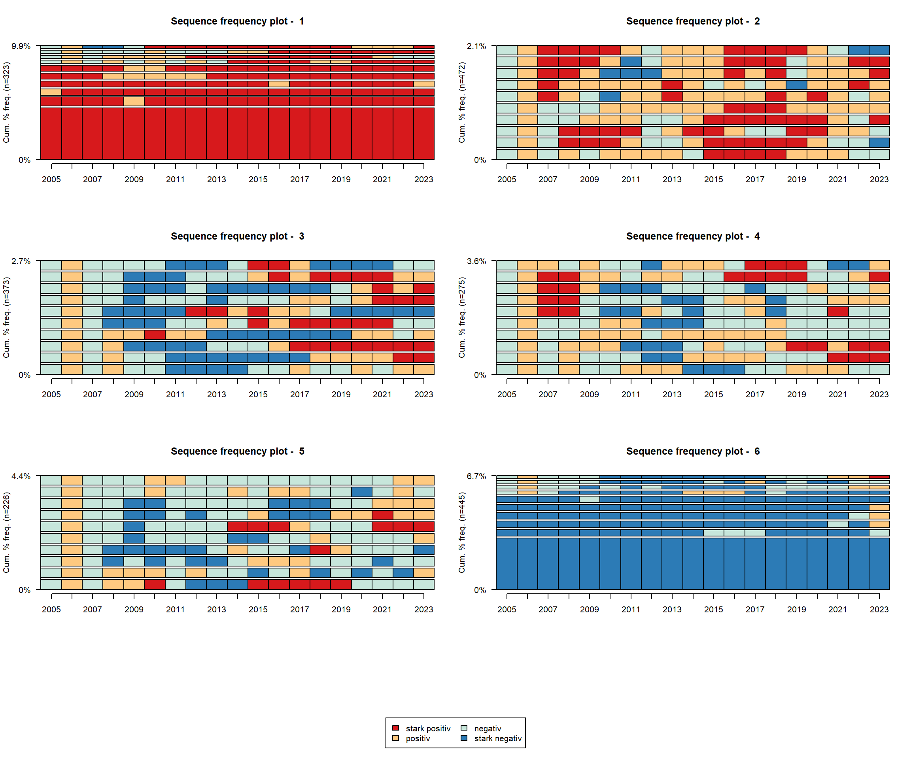
?seqdiststarte den http Server für die Hilfe fertigcosts <- seqcost(seq.df, method = "INDELSLOG")
dist.dhd <- seqdist(seq.df, method = "DHD", indel = costs$indel) [>] 2114 sequences with 4 distinct states
[>] creating a 'sm' with the costs derived from the transition rates
[>] creating time varying substitution-cost matrix using transition rates ...
[>] computing time varying transition probabilities for states HG/G/D/HD ...
[>] 2072 distinct sequences
[>] min/max sequence lengths: 19/19
[>] computing distances using the DHD metric
[>] elapsed time: 1.14 secswardcluster_DHD <- hclust(as.dist(dist.dhd), method = "ward.D")
k <- 6
groups.dhd <- cutree(wardcluster_DHD, k = k)
seqiplot(seq.df, border=NA, group = groups.dhd, idxs= 1:2114)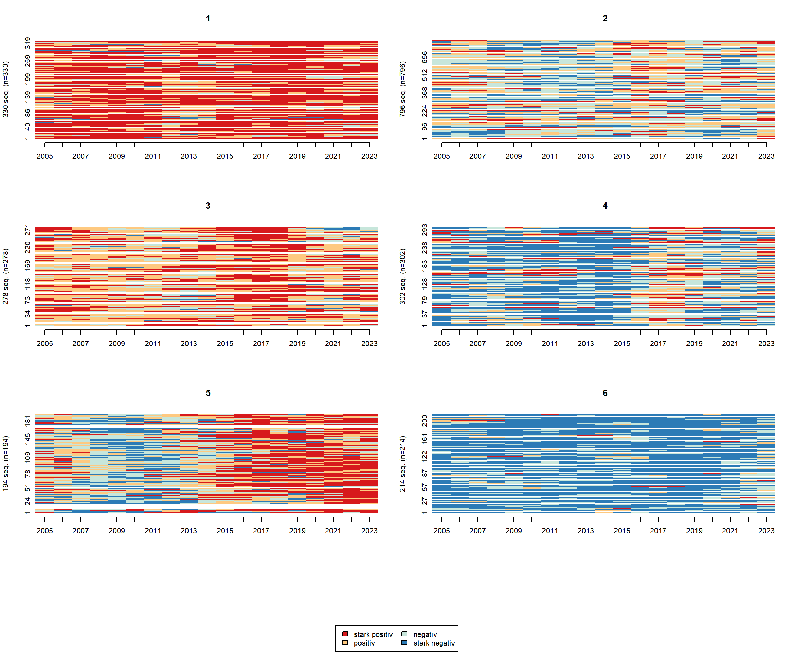
seqdplot(seq.df, main = "Sequence distribution plot", group = groups.dhd, border=T) 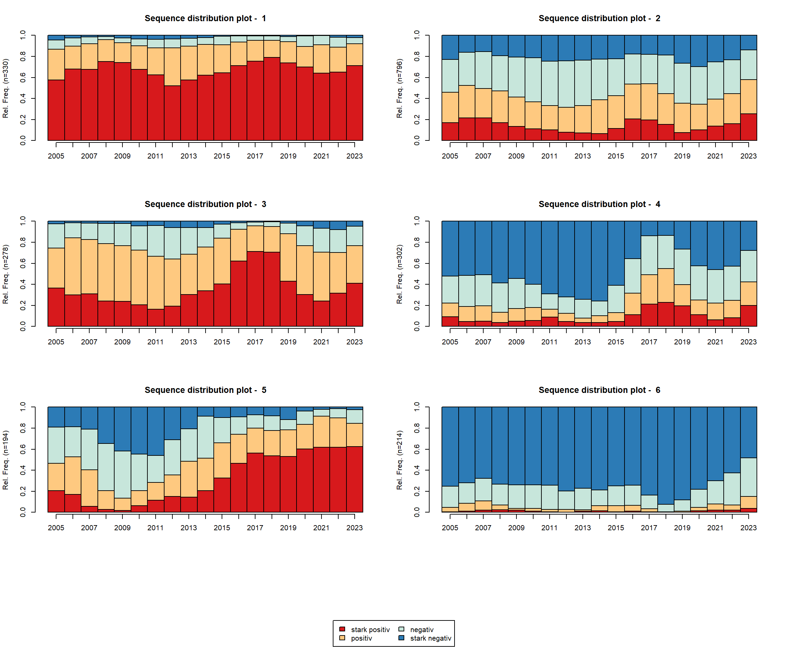
seqfplot(seq.df, main = "Sequence frequency plot", group = groups.dhd, border=T) 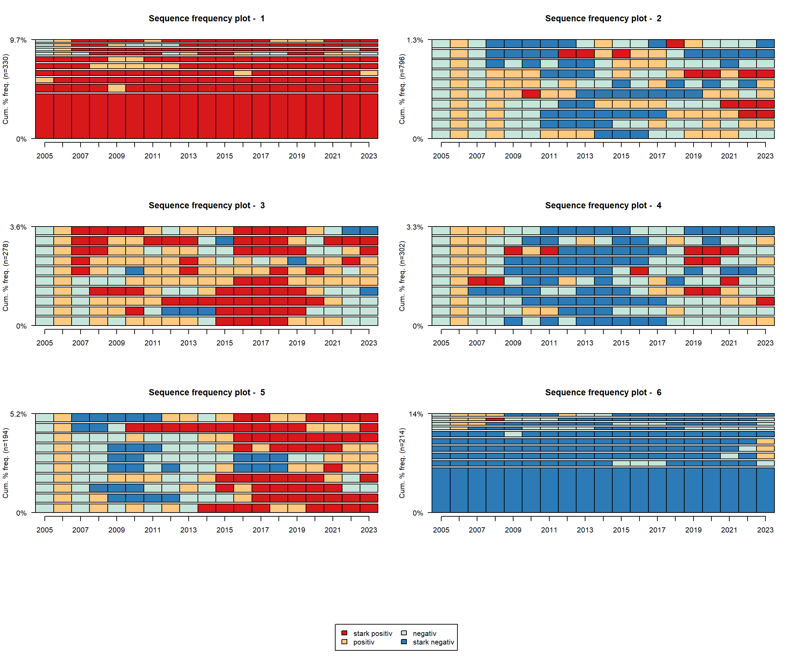
seq$cluster.om <- factor(groups.om)
seq$cluster.dhd <- factor(groups.dhd)Mit dem Paket “sf” (“Spatial Features”) kann R auch als Geoinformationssystem verwendet werden. Das Paket “mapview” ermöglicht das einfache Erstellen von interaktiven Karten. Wir installieren beide Pakete mit install.packages() und laden sie mit library()
#install.packages(c("sf", "mapview")) library(sf) library(mapview)
library(sf)Linking to GEOS 3.11.2, GDAL 3.7.2, PROJ 9.3.0; sf_use_s2() is TRUElibrary(mapview)Um Karten zu erstellen müssen wir unserem Dataframe räumliche Informationen hinzufügen. Die Statistik Austria stellt zu diesem Zweck in ihrem STATatlas die regionale Gliederung Österreichs in Form von .shp files zur Verfügung.
Ein Shapefile ist ein älteres, sehr verbreitetes Dateiformat, mit dem man Kartenobjekte wie Punkte, Linien und Flächen samt ihren Daten speichert. Es besteht aus mehreren zusammengehörigen Dateien (z. B. .shp, .shx, .dbf), die gemeinsam in einem Ordner liegen müssen, und wird von den meisten GIS‑Programmen unterstützt.
shp <- read_sf("data/OGDEXT_GEM_1_STATISTIK_AUSTRIA_20250101/STATISTIK_AUSTRIA_GEM_20250101.shp")
head(shp) # in der Spalte geometry sind die Koordinaten (Punkte, Polygone, Linien) für jede Gemeinde in Österreich gespeichertSimple feature collection with 6 features and 2 fields
Geometry type: MULTIPOLYGON
Dimension: XY
Bounding box: xmin: 628026.2 ymin: 436909.1 xmax: 659390.5 ymax: 458158.4
Projected CRS: MGI / Austria Lambert
# A tibble: 6 × 3
g_id g_name geometry
<chr> <chr> <MULTIPOLYGON [m]>
1 10101 Eisenstadt (((637377.1 439927.1, 637314.8 439990.3,…
2 10201 Rust (((649519.4 441308.4, 649519.1 441303.2,…
3 10301 Breitenbrunn am Neusiedler See (((651390.8 458137, 651422.4 458098.8, 6…
4 10302 Donnerskirchen (((657709.2 448462, 657306.5 448432.9, 6…
5 10303 Großhöflein (((635649.5 445523.9, 635660.6 445491.5,…
6 10304 Hornstein (((634388.3 450387.4, 634474.4 450373.2,…shp$g_id <- as.integer(shp$g_id)
map <- left_join(seq, shp, by = c("gemnr" = "g_id")) %>%
st_as_sf()
## Recoding map$Wert into map$typ
map$typ <- map$Wert %>%
fct_recode(
"Urbane Großzentren" = "101",
"Urbane Mittelzentren" = "102",
"Urbane Kleinzentren" = "103",
"Regionale Zentren, zentral" = "210",
"Regionale Zentren, intermediär" = "220",
"Ländlicher Raum im Umland von Zentren, zentral" = "310",
"Ländlicher Raum im Umland von Zentren, intermediär" = "320",
"Ländlicher Raum im Umland von Zentren, peripher" = "330",
"Ländlicher Raum, zentral" = "410",
"Ländlicher Raum, intermediär" = "420",
"Ländlicher Raum, peripher" = "430"
)
library(patchwork)
map_cluster <- ggplot(data = map) +
geom_sf(aes(fill = cluster.dhd))+
scale_fill_brewer(palette = "Accent")+
theme_classic()
map_typ <- ggplot(data = map) +
geom_sf(aes(fill = typ), color = NA) +
scale_fill_manual(
values = c(
"Urbane Großzentren" = "#b35e6b",
"Urbane Mittelzentren" = "#d67169",
"Urbane Kleinzentren" = "#e08f81",
"Regionale Zentren, zentral" = "#eeaf58",
"Regionale Zentren, intermediär" = "#f5ca82",
"Ländlicher Raum im Umland von Zentren, zentral" = "#fdf453",
"Ländlicher Raum im Umland von Zentren, intermediär" = "#fefabb",
"Ländlicher Raum im Umland von Zentren, peripher" = "#eeec85",
"Ländlicher Raum, zentral" = "#c2d38c",
"Ländlicher Raum, intermediär" = "#84b870",
"Ländlicher Raum, peripher" = "#789d6e"
)
) +
theme_classic()
map_typ / map_cluster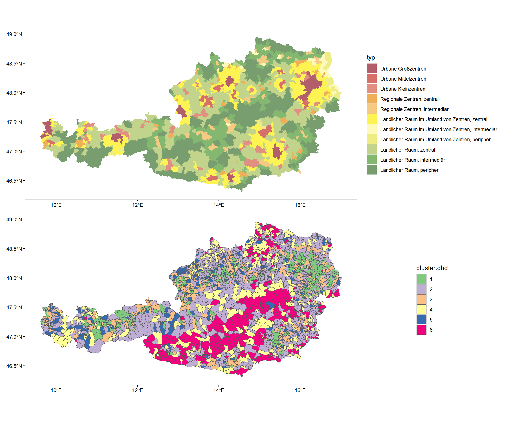
#mapview(map, zcol = "cluster.dhd")
#mapview(map, zcol = "Wert")